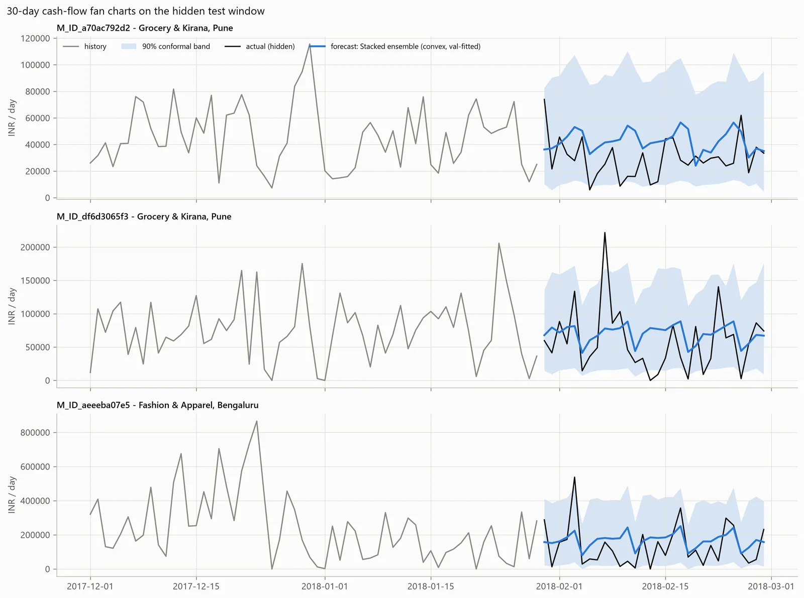
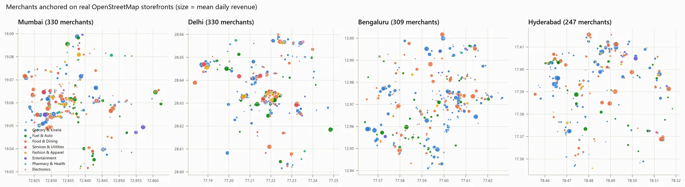

Case study / 03India · 8 cities · 2026
Hyper-Local Merchant Intelligence Engine · M.Sc. capstone · Banking & Finance
Merchant
Intelligence.
An end-to-end ML system that turns transaction logs, OpenStreetMap context and weather into a 30-day cash-flow forecast, a peer benchmark and grounded advice for small Indian merchants.
See the results
01 / Situation
Thin cash,
no analyst.
A neighbourhood kirana store cannot hire a data team. The engine answers three questions for each merchant: what will cash flow look like over the next 30 days, how do I compare with similar shops within 500 m, and what should I do about it?
Elo records
in 8 cities
festival, OSM context
02 / Approach
Predict, benchmark,
prescribe.
- 01
Predict cash flow
Direct multi-horizon 30-day forecasts from LightGBM, XGBoost (CUDA), CatBoost, N-HiTS and a Bi-GRU with attention, blended in a convex stacked ensemble. Conformal calibration gives 90% prediction bands, and a cost-sensitive classifier flags liquidity shocks.
- 02
Benchmark against peers
Merchants are clustered on operating context with UMAP + K-Means (benchmarked against Ward, DBSCAN and HDBSCAN; 14 clusters selected), then compared with peers using robust z-scores and k-anonymity ≥ 5.
- 03
Prescribe, with guard rails
TreeSHAP drivers feed a model-simulated action library. A local Ollama LLM (qwen2.5:7b) words the advice, and a numeric grounding guard checks the numbers in it against the analysis.
03 / Results
Accurate where
it matters.
35.7%
WAPE for the stacked ensemble on the hidden 30-day test window, per merchant-day (R² 0.88)
11.6%
WAPE on each merchant’s 30-day total — the figure a cash-flow decision actually uses
90.1%
empirical coverage of the nominal 90% conformal band (LightGBM quantile; 88.0% before calibration)
0.85
Moran’s I of the OSM footfall index: strong spatial clustering, the case for a hyper-local approach
Ablations keep the claims honest. Dropping the festival/payday calendar raised festival-day WAPE from 47.0% to 50.3%; dropping weather or OSM features barely moved the overall score.


04 / Data & method
A digital twin,
labelled as one.
Elo anonymises currency, category and geography, and the public Indian datasets are synthetic. So the merchant panel is a semi-synthetic digital twin: daily demand dynamics are real, money is calibrated to INR by quantile mapping, and merchants are anchored to real OSM storefronts.
- Demand
- Elo merchant transactions (Kaggle)
- Context
- OpenStreetMap · Open-Meteo
- Models
- LightGBM · XGBoost · CatBoost · PyTorch
- Explainability
- TreeSHAP · Ollama
- Delivery
- Streamlit · decks · viva guides
05 / Limits & honesty
What it does
not claim.
The report states these in its methodology section; they belong here too:
- Weather, festival, competition and promotion responses are injected through a documented response function, so those effects are by design, not discoveries. Placebo and negative-control tests separate real from injected effects.
- Merchant-day revenue is noisy (35.7% WAPE); the forecast earns its keep when aggregated to the 30-day total (11.6%).
- The merchants are not real businesses. The system shows the method working, not an audited result for any shop.